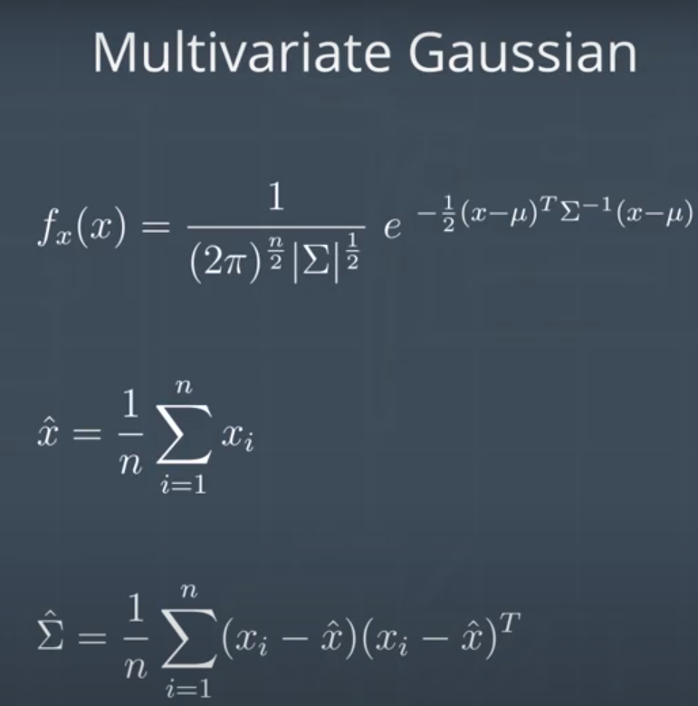
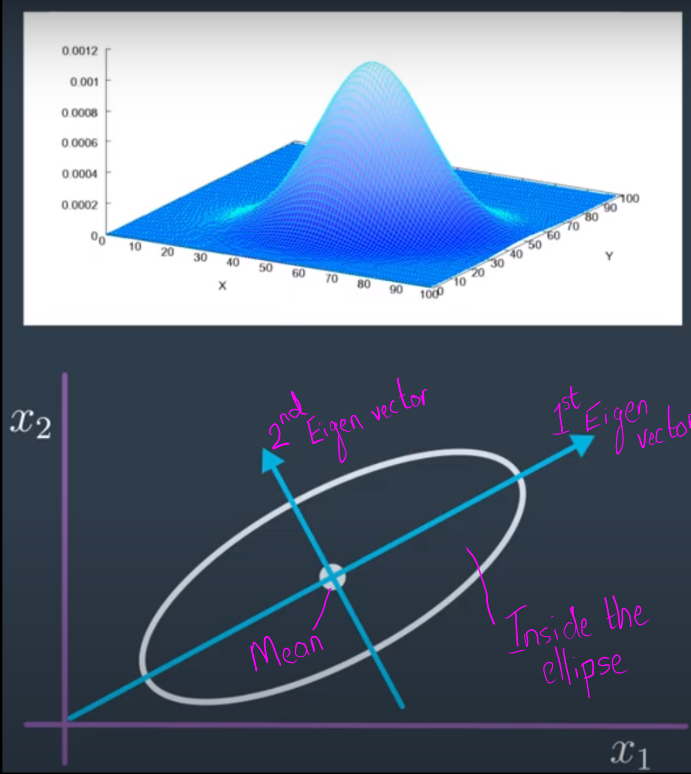
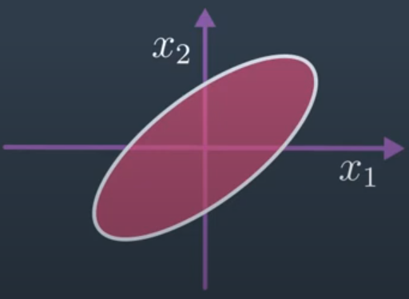
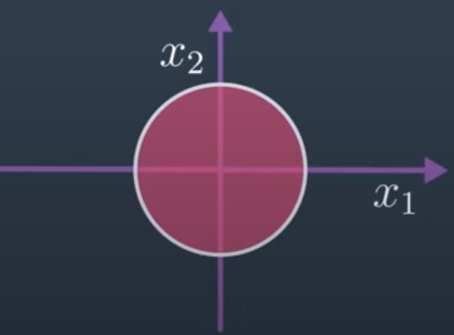
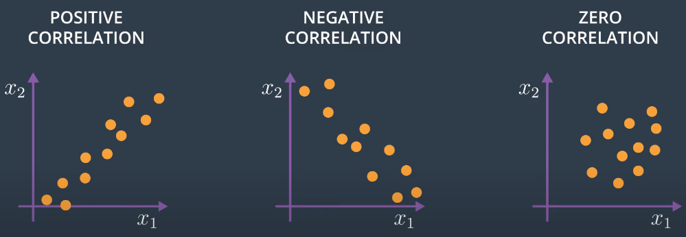

Considering x,y,z dimensions and attitude as well, an object's state vector becomes six dimensional.
The aim is to have a distribution over all the variables of a multi-dimensional vector. Treating each one separately, implicitly, makes a strong assumption about each one's independence.
The same concepts used for scalar values can also be used with vectors.
Scalar value functions
Scalar Variable
$$
x
$$
Normalisation
$$
\int^\infty_{-\infty} f(x)dx = 1
$$
$f(x)$ is the probability density function with a constant multiplier in front to make the integral go to 1. $f(x)dx$ gives the probability of $x$ for the interval $dx$.
$$
\Sigma = \int^\infty_{-\infty} \cdots \int^\infty_{-\infty} (x-\mu) (x-\mu)^T f(x)dx_1 \cdots dx_n
$$
Variance is replaced by a covariance matrix, $\Sigma$. It is a matrix because the outer product, $(x-\mu)(x-\mu)^T$, results in a matrix.
The covariance matrix is going to be
symmetric and
positive semi definite
That is, there are no negative eigenvalues.
Multivariate Gaussian and its parameter estimates

The functional form is not very different from the scalar gaussian:
We're no longer taking square root of $2\pi$; it's $\frac{n}{2}$ for a vector $x$ of length $n$
$|\Sigma|$ is the determinant of the covariance
And then we have the vector multiplication $(x-\mu)^T\Sigma^{-1}(x-\mu)$
The estimate of the parameters is almost the same as before,
taking care to do the vector math correctly.
Example of a two dimensional covariance

An overhead view. The center of the ellipse is the mean. The figure shows the 1st and 2nd eigen vectors which we get from extracting the eigenvalues and eigenvectors from the covariance.
An important property of the covariance is that the
eigenvalues and eigenvectors of the covariance
describe the amount and direction of uncertainty.
An ellipse drawn at one eigenvalue away from the mean along each vector, defines a confidence region which in this case is an ellipsoid.
Just as one standard deviation distance away from the mean in the scalar case defined the 68% confidence interval for x, the ellipse in 2D defines the confidence interval. The total probability inside the ellipse at 1 standard deviation is not 68% in this case. The total probability for a given length of axis actually depends on the number of variables in the random vector. But in 2D, 95% probability is captured by axis with length that is roughly five times the eigenvalues.
Joint distribution
A lot of the times, knowing the value of one field in our vector tells us something about the other fields. For instance, if a vehicle has a distribution over a state x, y, z, knowing the altitude of the vehicle may tell us something about its lateral position or vice versa. We can't treat those probabilities separately and differently.
Hence, if we have a multivariate distribution, we can't just assume that we have a separate probability distribution around each variable or field in the vector.
We often have joint distributions, where if we have a vector $x = [x_1,x_2]$, then: $$p(x) = p(x_1, x_2)$$
The function $p(x)$ is a probability distribution over the 2 variables that takes the vector as an input and outputs a scalar density.
Marginal
To find the probability over $x_1$ from the joint distribution, we compute the marginal by integrating $x_2$ out of the density function:
$$
p(x_1) = \int{p(x_1,x_2)dx_2}
$$
If we have many variables in our vector, we can integrate out all the variables we don't want, to get a marginal over any subset of variables we do want.
Independence
The system that we're estimating may have more than two variables. A flying vehicle may have variables for x, y, z, roll, pitch, yaw and perhaps even for their derivatives which takes it to 12. We might have variables that track what's happening in the environment - example, states (12 each) of other drones. This distribution can get unwieldy very quickly.
But only some of the variables may actually have information about each other, i.e. some of the random variables in the vector are independent. Independence is the property that the joint probability density function is the product of individual densities of the component variables:
$$
p(x_1,x_2) = p(x_1)p(x_2)
$$

Dependent

Independent
We can see the effect for a 2D Gaussian where, if $x_1$ and $x_2$ are correlated, then we may have a distribution that is oval shaped and tilted. Here, if we have a positive $x_1$,
then we're very likely to have a positive $x_2$. If we have a negative $x_1$ we're very likely to have a negative $x_2$.
On the other hand, for a spherical Gaussian, knowing where we are on the $x_1$ axis, tells us very little about where we might be on the $x_2$ axis.
The idea of independence is that knowing the value of one variable has no effect on the other random variable, i.e. knowing the value of $x_1$ tells us nothing about $x_2$.
Correlation
How to know if 2 variables are independent? How can we tell if a random variable such as whether the vehicle is working is independent of whether the payload is working? If the data are discrete and we have a probability mass function also known as having categorical data, then a chi-square test is a type of statistical test that can be used to determine the degree to which the differences between variables are due to chance or if they're actually correlated in some way. For continuous data, we can examine what's known as correlation.
Intuitively, correlation gives us some measure of how related two variables are. Let's say we sample some distribution over 2 variables ($x_1$, $x_2$) and plot those points. In this case we would say the correlation is positive since a large $x_1$ means $x_2$ is likely to be large as well. For zero correlation, the knowledge of $x_1$ doesn't really say anything about $x_2$.

Correlation between 2 variables.
This is fine for a qualitative understanding of whether the correlation is positive, negative, or zero. But to precisely quantify the correlation, we need a correlation function.
Pearson Product-Moment Correlation
There are many different choices for correlation functions. One common choice is the Pearson Product-Moment Correlation.
$$
\rho_{1,2} = \frac{cov(x_1,x_2)}{\rho_{x_1}\rho_{x_2}}
$$
$\rho_{x_1}\rho_{x_2}$ - Standard deviations of the variables
$\rho_{1,2}$ - Correlation between the variables
$cov(x_1,x_2)$ - Covariance of the 2 variables
If the data are independent, then the correlation is going to be equal to $0$ because the covariance is going to be 0 as follows:
$$\begin{align*}
cov(x_1, x_2) &= E[x_1x_2] - E[x_1]E[x_2] \\
if\:independent &= E[x_1]E[x_2]- E[x_1]E[x_2] \\
&= 0
\end{align*}$$
Application of the correlation test
Imagine we had 2 random variables constructed from some other random variable that itself is distributed from $0$ to $2\pi$.
$$\begin{align*}
y_1 &= sin(x) \\
y_2 &= cos(x)
\end{align*}$$
$x$ is uniform on $[0,2\pi]$.
The $y$ variables are clearly not independent - if we know one with high probability, we know the other. But, the expected value of all the $y$'s is equal to $0$, and the co-variance is equal to $0$. Which means the variables are uncorrelated, but they're clearly not independent.
$$\begin{align*}
E[y_1] = E[y_2] = E[y_1y_2] = 0 \\
cov(y_1,y_2) = 0
\end{align*}$$
For jointly Gaussian random variables $x_1$ and $x_2$, we can show that if the correlation is zero then the variables are indeed independent. It's a useful test just for this particular setting. It's also easy to construct an example where if the marginal of $x_1$ and the marginal of $x_2$ are each Gaussian, the covariance will be $0$ even though they're clearly not independent.
Relationship of Correlation with Covariance
When two random variables are correlated, knowledge of one provides some information about the other. For example, the position of a vehicle now and the position of a vehicle in one second are correlated random variables: knowledge of one should give me some insight into the value of the other.
The Pearson correlation coefficient is one way of quantifying this relationship.
Covariance is a measure of the joint variability of two random variables. If one variable tends to be big when the other is big, then the covariance is positive. The correlation coefficient is simply the normalized version of the covariance.
Conditional distribution
Another useful property of joint random variables is that it's often of extreme interest to find a density of one of the unknown random variables given specific knowledge of other random variables. For instance, is a vehicle moving, given the current state of the propulsion system.
Chain rule
$$
p(x|y) = \frac{p(x,y)}{p(y)}
$$
$p(x,y)$ is the joint distribution - probability of $x$ and $y$.
$p(x|y)$ is the conditional distribution.
$p(y)$ is the marginal of the conditioning variable.
Bayes' rule
A really useful application is sometimes we want to reverse our conditional probabilities. When we do estimation for a flying vehicle, we generally have access to measurements $y$ (example: GPS which will always have some noise) and we want to know the probability of $x$ given those measurements. So we want to calculate the conditional probability $p(x|y)$.
If we had a model of the position probability density function given a measurement then we have everything we need. But it's often much easier to generate a model of the measurement distribution (i.e. generate the distribution of measurement likelihoods) given the current position, $p(y|x)$. This is where Bayes' Rule is really helpful! We can apply the chain rule twice:
$$
p(x|y) = \frac{p(y|x)p(x)}{p(y)}
$$
Applying Bayes' rule
How can we use Bayes' rule?
We start with prior belief
For example, imagine that we don't know where our vehicle is, but we have some knowledge about roughly where it is, called the prior. We know the vehicle position is distributed with some mean and some variance. The variance tells us how well we think we know where the vehicle is.
Let us assume that the prior distribution of $x$ is Gaussian with mean $\mu_x$ and variance $\sigma^2_x$:
$$
p(x) = \mathcal{N}(\mu_x, \sigma^2_x)
$$
We make a measurement $y=x+v$
$x$ is the true position of the vehicle, $v$ is the error added during measurement, and $y$ is the received measured value. We can assume that the position is independent of the measurement noise, which means $x$ is independent of $v$.
$$
p(v) = \mathcal{N}(0,\sigma^2_v)
$$
Compute $p(y|x)$
Given the prior and the measurement distributions are gaussian, the likelihood of the measurement $y$ given $x$ is also Gaussian. From chain rule, we can derive:
$$\begin{align*}
p(y) &= \mathcal{N}(\mu_x,\sigma^2_x + \sigma^2_v) \\
p(y|x) &= \mathcal{N}(x, \sigma^2_v)
\end{align*}$$
Find the posterior distribution $p(x|y)$
We can compute the distribution over the position given the measurement using Bayes' rule. If we apply all the normal distributions into the Bayes' rule equation (product of two normal distributions, divided by a third normal distribution), we get another normal distribution as the result.
$$
p(x|y) \sim \mathcal{N}(\mu, \sigma^2)
$$
where the mean and variance are as follows:
$$
\mu = \mu_x + \frac{\sigma^2_x}{\sigma^2_x + \sigma^2_v}(y-\mu_x)
$$
$$
\sigma^2 = \frac{\sigma^2_x\sigma^2_v}{\sigma^2_x + \sigma^2_v}
$$
Properties of the equation for the mean of the posterior distribution
$$
\mu = \underbrace{\mu_x}_{\text{Initial estimate}} +
\underbrace{\frac{\sigma^2_x}{\sigma^2_x + \sigma^2_v}}_{\text{Trade off of trust} \atop \text{Measurement vs prior}}
(\underbrace{y}_{\tiny{Measurement}}-\mu_x)
$$
The measurement $y$ is applied as a correction to the initial estimate $\mu_x$
If $\sigma_v$ is small compared to $\sigma_x$, it means we have more trust in our measurement than in our initial estimate, and that results in a new estimate which is centered very close to the measurement
If we trust the prior more, i.e. $\sigma_x$ is small compared to $\sigma_v$, then the updated position estimate only gets moved slightly in the direction of the measurement